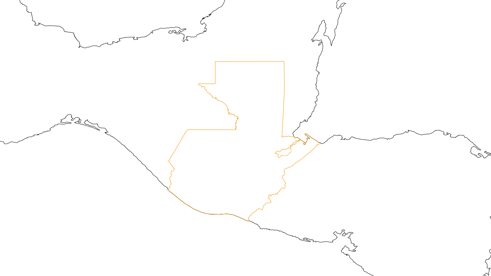

Archivo
Geografía
de Encuentros
Pantalla Itinerante
Departamentos
Petén
Huehuetenango
Quiché
Alta Verapaz
Izabal
San Marcos
Totonicapán
Sololá
Baja Verapaz
Zacapa
Quetzaltenango
Chimaltenango
Guatemala
El Progreso
Sacatepéquez
Suchitepéquez
Chiquimula
Retalhuleu
Jalapa
Escuintla
Santa Rosa
Jutiapa
↑
↓
para explorar